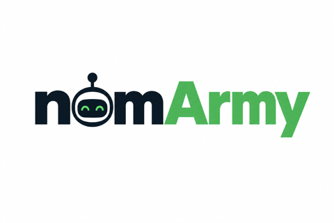

nomArmy
Tiny local coders, big appetites for bounded tickets
An agent harness where the worker's claims are never trusted
A frontier coordinator (Claude Code, Codex) decides what should be built and whether the result is acceptable. A cheap worker - a nom - does the implementing, testing and repairing, usually on a local model running on your own machine at zero token cost. nomArmy owns everything in between: worktrees, Git, environments, verification, and the evidence that decides whether work is accepted.
The invariant
Worker output is a claim. Repository and environment state are evidence.
The worker never runs Git. It cannot commit, merge, or mark its own work accepted. It writes a four-line report, and nomArmy independently derives every fact that matters - what changed, what was added, whether the tests actually pass - from the repository itself. A worker that says done and a repository that disagrees is a failed job.
Quickstart
Pick your platform and get running:
git clone https://github.com/rayson-tech/nomarmy.git
cd nomarmy
chmod +x install.sh e2e.sh scripts/*.sh
./install.sh --profile macbook-pro
./e2e.sh --profile macbook-proFor Linux, Windows, NVIDIA DGX Spark, or cloud (Bedrock), see the platform guides in the README.
What it does
- Bounded delegation - Workers get tight, self-contained tasks with clear acceptance criteria
- Isolated worktrees - Every job runs in its own disposable Git worktree
- Coordinator-owned Git - Workers never touch Git; only the coordinator can commit or merge
- Verified claims - Every worker report is mechanically checked against repository state
- Zero-token local inference - Run nom on your own machine using llama.cpp
- Cloud fallback - Amazon Bedrock profiles work when local inference isn't practical
Status
v1.3 extends the harness toward autonomous workers with real execution environments and is still in development.
- Bounded delegation, coordinator-owned Git, retained worktrees - Working
- Local (llama.cpp) and Amazon Bedrock execution profiles - Working
nomarmy doctor- Host readiness with a fix for every failure - Working- Scout and decompose modes - Read-only noms with verified citations - Built, tested
- Disposable per-job service environments - Not yet built
- Full-stack acceptance test proving the thesis end to end - Run across 3 local models on 7 tickets; task-size-dependent, not unconditionally true - see the README
What we actually measured
Delegating to a local worker does not save tokens unconditionally. Small, precisely-diagnosed fixes lose to just doing them directly - the fixed cost of a dispatch brief plus mandatory independent verification does not shrink because a worker got it right. It starts paying off once the context needed to safely make a fix meaningfully exceeds the fix itself, since a local worker reads that context for free. Three different local models were tested on an identical, genuinely subtle bug and all three found and fixed it correctly - the real differentiator was wall-clock and turn count, not whether they could do it.
The nomarmy CLI
After installing, you'll have these commands available:
nomarmy doctor- Checks host readiness and prints a fix for anything missingnomarmy setup- Detects your machine and writes a configuration profilenomarmy sizing- Recommends context/slot/worker counts from your hardwarenomarmy scan- Reports a repository's execution environment from evidencenomarmy model- Change the configured model later